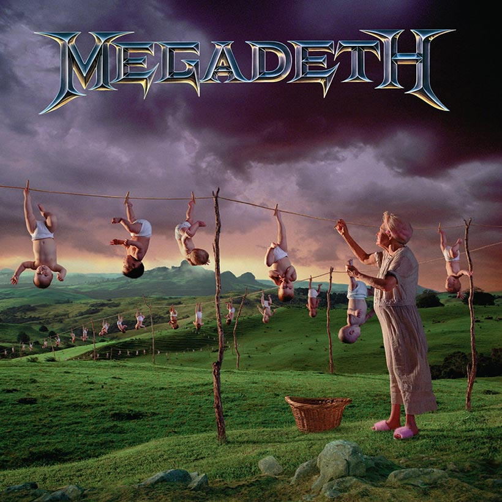

 Youthanasia is the sixth studio album for Megadeth being released in 1994 it cements the new sounds the band achieved in the Countdown to extinction album, moving away from their fast thrashing past and towards a groovier and more gimmicky style typical of bands of the 90s whilst still maintaining the complexity and lyrical tones the band is known for. This could be attributed to the greater creative control allowed to other band members much to Mustaine’s dismay. This album was released during a period of turmoil for the band as you guessed it the band had more smack than money. Mustaine’s vocal style can be very hit or miss for many listeners but this album provides mostly hits, the new groovy sound compliments the uneasiness of his high notes and the quick sway between highs and lows.
Killing road displays perfectly how the bands new swinging sound could have turned out and it would have fine by me but unfortunately this songs sound did not stick; this sound accurately depicts the rush of touring as the band wouldn’t often be in the same location for long periods of time moving along just as fast as the tempo of the song. The smoother vocal style is accompanied by a depiction of the not so smooth road to success through touring music as previously mentioned the band did not really have a surplus of money to rely on leading to less than comfortable touring conditions.
Youthanasia portrays the hard-hitting message of the youth being ignored by government for things they deem more important such as “drugs and guns” this motif told through the classic harsh raspy Mustaine style. The riffs of this song help to drive home the message of helplessness through the slow melancholic drones they create as if the song itself is slogging through life as well as you until the solos after the hard hitting implication of suicide as though the only happiness in life is your own choice to take it.